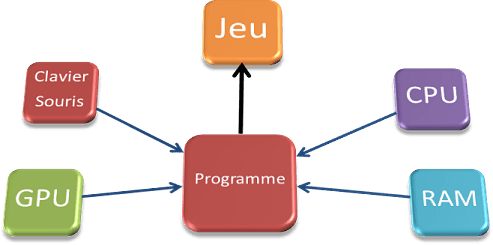
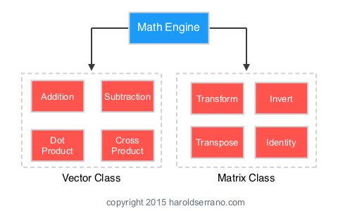
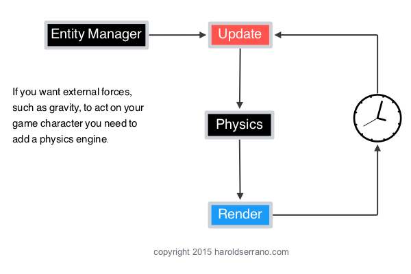

What is a video game engine? 🎯
The notion of game engine appeared in the 1990s, in reference to software used in first-person shooter games such as Doom. Doom's architecture made a clear distinction between the game's engine components and Doom's own digital assets such as graphics, sounds, music, scenes and rules that reproduce the atmosphere of the game.
A game engine is a set of software components that perform geometry and physics calculations used in video games. The whole forms a flexible real-time simulator which reproduces the characteristics of the imaginary worlds in which the games take place. The purpose of a game engine is to allow a development team to focus on the content and flow of the game rather than solving computer problems.

For several years, the role of game engines has continued to grow. The investment represented by the development of game engines continues to grow and makes it difficult or even impossible to amortize them over a single production.
Among the game engines most used or noticed in recent years, we will cite (non-exhaustive list): Renderware, the various Unreal engines, Quake engines, Source engines, CryEngine, Unity, Torque Game Engines, Reality engines, Novodex, Antiryad Gx, etc.
How do video game engines work? 👥💻
In a nutshell, game engines work by establishing the framework that makes it easier for a user to create something (like a video game or digital twin) than if they had to create it from scratch. The framework provided varies from engine to engine, but game engines generally include a 2D or 3D rendering engine.
Game engine software was originally created by game developers with the goal of developing new games faster and easier. But now, these powerful rendering tools have given other industries the ability to visualize data, products and processes in new ways and develop creative ways to collaborate and innovate.
What are the functionalities of a video game engine? 📌
Each game engine is unique. However, certain functionalities are found.
We have modules such as:
The Mathematics module

The math engine handles all linear algebra operations and geometric operations. Vectors and matrices allow a character to move and rotate, respectively.
The Physics module

The interesting part of a game engine is the physics engine. This module is essential and a good game engine should integrate this module. It helps you create and emulate all the game physics. For example if you want to bounce a ball, you can easily add gravity, mass to the ball and a bounce effect in most cases without any lines of written code!
But it is also the most complicated. The physics engine determines the position and speed of an entity. To do this, it integrates the external forces acting on the entity.
The Audio module
The sound is part of the gameplay and must lead the player, give him clues. Among other things, it must increase the feeling of immersion.
The Audio module in a video game engine is a set of code executable in a computer program which allows you to manage the audio part of the program.
-
The Scripting module -
The AI (Artificial Intelligence) module
Why the name CHAOS? 👾
This is because it uses the ECS and it uses the pearl melle stuff. CHAOS it alludes more to something chaotic.
What are the features of our video game engine? 🤖
Since a game engine has some basic features such as physics and mathematics, our game engine contains the following features:
A Physics module
The physics module alone manages the movement of entities based on kinematic calculations and collision management.
A Resource Manager module
This module is responsible for destroying textures once they are created and finished being used.
A GUI (Graphical User Interface) module
This module is responsible for the interaction between the screen and the player. Thanks to this module, the player has access to the different functions of the game. The GUI module at our level encapsulates the Raylib library which is the library that we use for the development of our game.